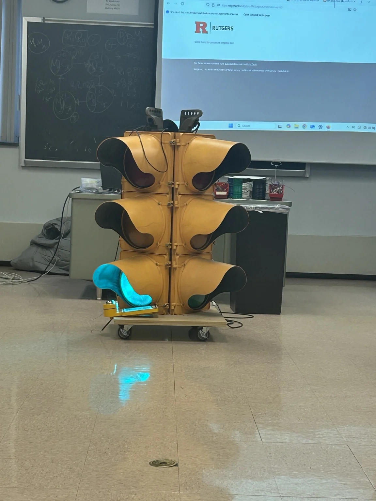
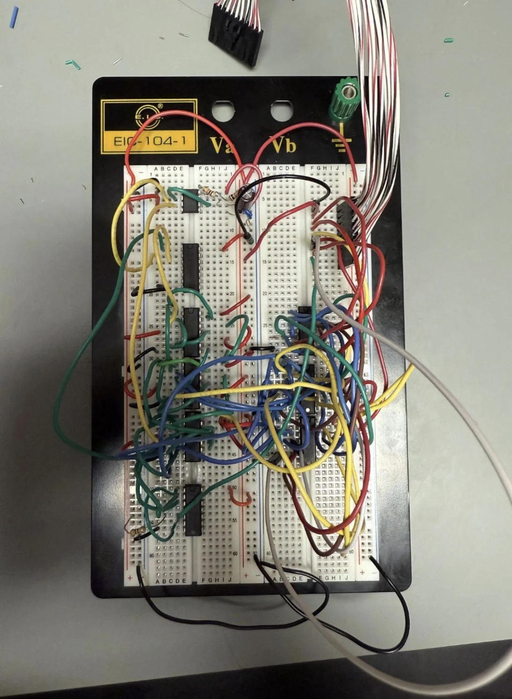
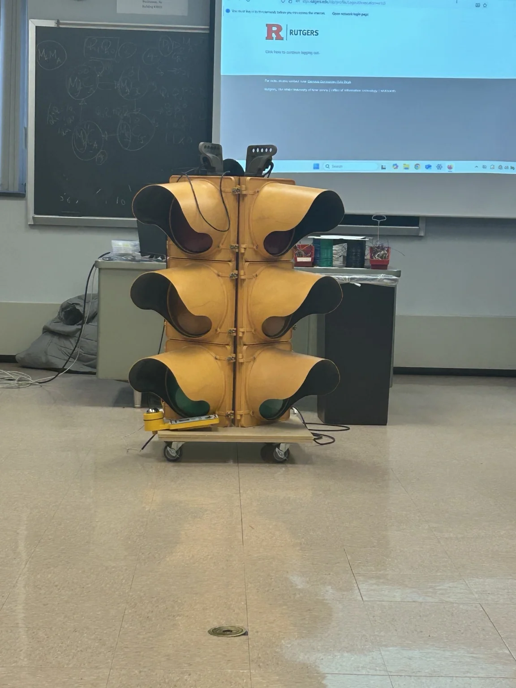

DIGITAL LOGIC / CIRCUITS / HARDWARE
Four-Way Traffic Light Controller
A hardware-based digital logic controller that automatically sequences red, yellow, and green signals for a four-way intersection.

Overview
I designed and assembled a four-way traffic control system using digital logic circuitry. Rather than programming a microcontroller, I implemented the sequencing with combinational logic, sequential components, and clock-generation circuitry, then tested the system with a physical traffic-signal display.
How it works
- Logic gates. AND, OR, and NOT gates determine signal outputs based on the controller’s current state.
- State storage. JK and D flip-flops track and transition between traffic-signal states.
- Timing. A 555 timer and counters drive the sequence and regulate state transitions.
- Signal coordination. The circuit cycles through red, yellow, and green phases to coordinate traffic directions.
- Debugging and testing. I assembled the control circuit on a breadboard and diagnosed wiring, logic, and timing issues until the signal sequence operated reliably.
Circuit implementation
The controller was constructed from discrete integrated circuits and wiring on a breadboard. The photograph below shows the implemented logic and interconnections.

Results
The circuit successfully coordinated 12 red, yellow, and green LED outputs. I verified the sequence across more than 100 continuous signal cycles to check for consistent timing and operation.
